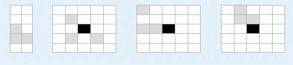

第一行包含一个整数N（3<=N<=20），即方块个数。
第2行包含N个整数对xi, yi, (-9<=xi,yi<=9, xi,yi为奇数) 其中第i个整数对代表第i个方块的初始位置。位置按照从上到下（即x递增）从左到右（即y递增）的顺序排列。
第3行包含N个整数对Pxi, Pyi(1<=Pxi,Pyi<=N)，代表目标形状中各小方块的相对位置。目标方块保证是一个连在一起的整体，且数据总是有解的。
佳佳最近被一个叫做“丹奇方块”的游戏吸引住了，但是却因为游戏太难而迟迟无法通关。游戏在一个没有边界的棋盘上进行，中心(0,0)处有一块黑色的障碍物，不远处坐标值为奇数的N个不同的格子中各有一个灰色方块。游戏的任务是把所有灰色方块全部粘起来组成一个给定的形状，如图一所示。该形状可以出现在棋盘上的任何位置，但不能旋转或者对称。图二描述了一个合法的初始状态，其中在坐标(-1,-1),(1,-1),(1,1)处各有一个灰色方块。

这个游戏看起来简单，但方块数目多，目标形状又很复杂的时候游戏者往往需要很多步才能完成。佳佳希望找到一个不超过2000步的解决方案，你能帮帮他吗？
第一行包含一个整数N（3<=N<=20），即方块个数。
第2行包含N个整数对xi, yi, (-9<=xi,yi<=9, xi,yi为奇数) 其中第i个整数对代表第i个方块的初始位置。位置按照从上到下（即x递增）从左到右（即y递增）的顺序排列。
第3行包含N个整数对Pxi, Pyi(1<=Pxi,Pyi<=N)，代表目标形状中各小方块的相对位置。目标方块保证是一个连在一起的整体，且数据总是有解的。
第一行为需要的步数S
3
-1 -1 1 -1 1 1
7